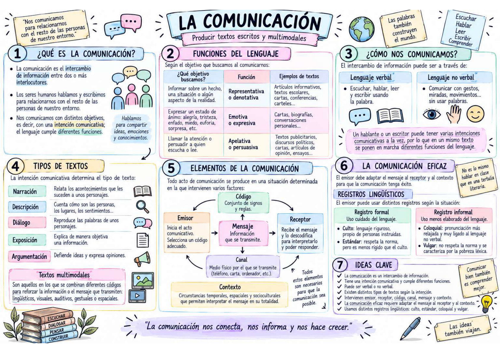
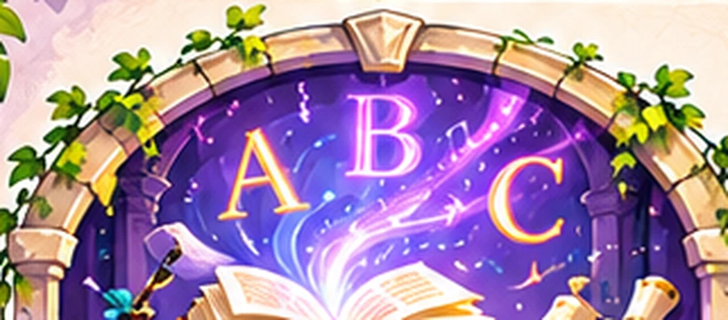
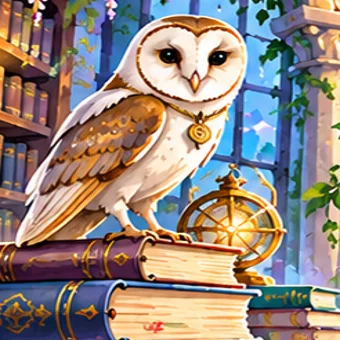
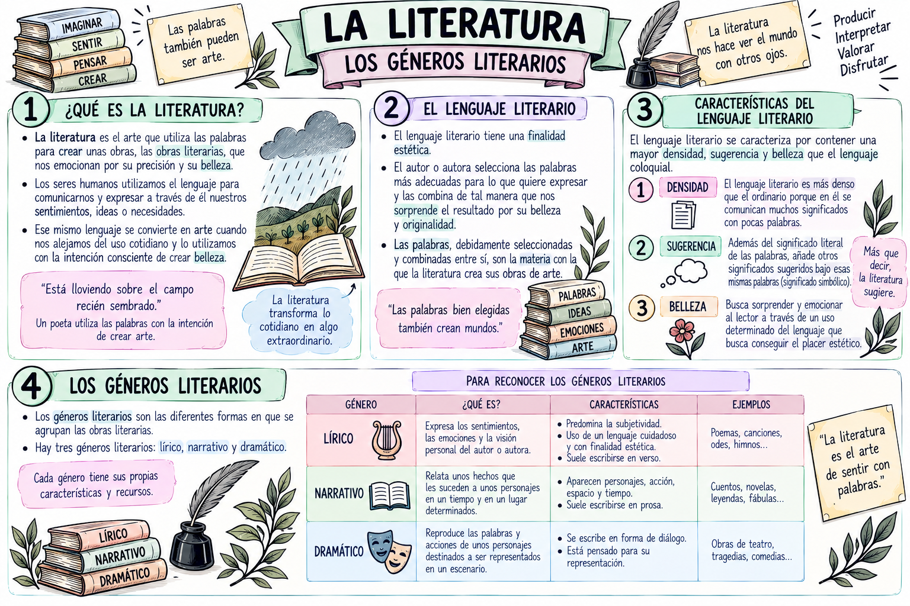
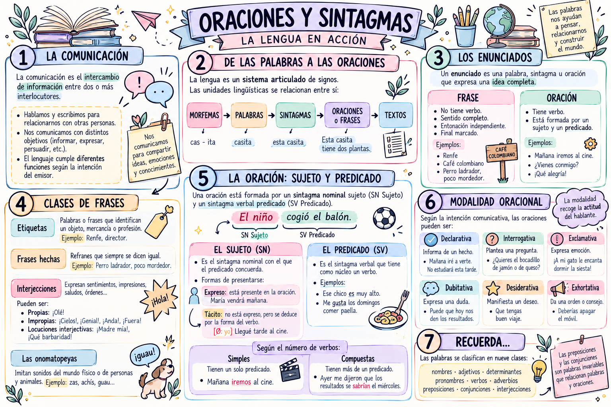
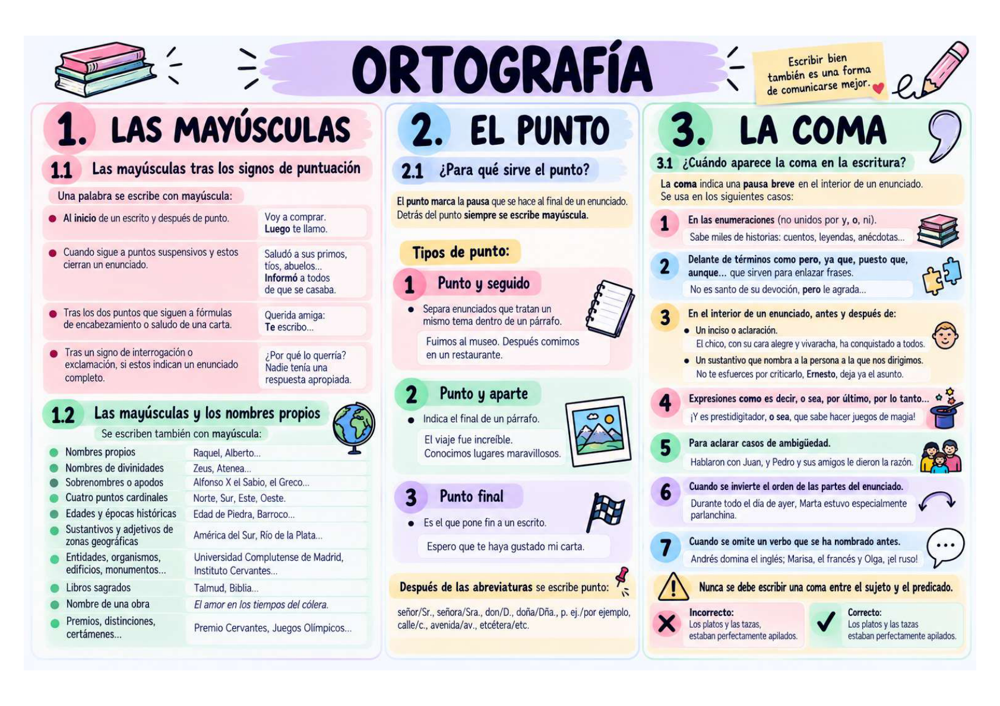

La comunicación
Funciones del lenguaje, comunicación verbal y no verbal, tipos de textos, elementos de la comunicación y registros lingüísticos.

¡Has abierto el primer portal! Descubre cómo viajan los mensajes y cómo se organizan las palabras para construir significados.
Comenzar la misión ✨

La guardiana te da la bienvenida: explora las salas en el orden que prefieras. Las actividades se corrigen aquí mismo; no se guardan notas ni datos personales.
Cuatro bloques de Lengua Castellana y Literatura. Consulta los esquemas originales de clase y amplíalos para leerlos con comodidad.
Funciones del lenguaje, comunicación verbal y no verbal, tipos de textos, elementos de la comunicación y registros lingüísticos.

El lenguaje literario, densidad, sugerencia y belleza; géneros lírico, narrativo y dramático.

Enunciados y frases, sujeto y predicado, modalidad oracional y clases de palabras.

Uso de mayúsculas, tipos de punto y reglas de la coma.

Estos son los materiales de clase de la SA1. En las siguientes versiones incorporaremos ejercicios específicos para cada bloque.
Relaciona cada elemento de la comunicación con su definición.
Selecciona un elemento para empezar.
Encuentra el núcleo del sintagma nominal.
«aquellos libros antiguos»
¿Qué palabra es el núcleo?
Responde cinco preguntas para conseguir tu insignia simbólica.